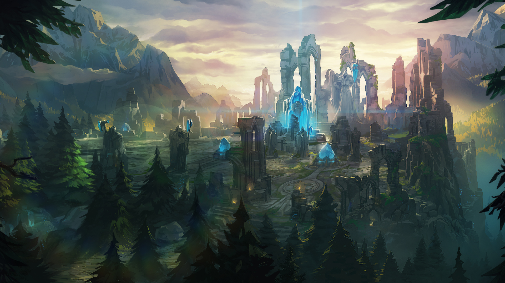

The soldiers stood before the immense Graygate, guarding the northeast border of Demacia. The name was anomalous, for the bastion was built of pristine white stone. It was generally understood that the name had come from the gray shale cliffs nearby, though soldiers stationed here, particularly those who hailed from the south or the coast of Demacia, moaned it had more to do with the perpetually overcast, northern skies.
